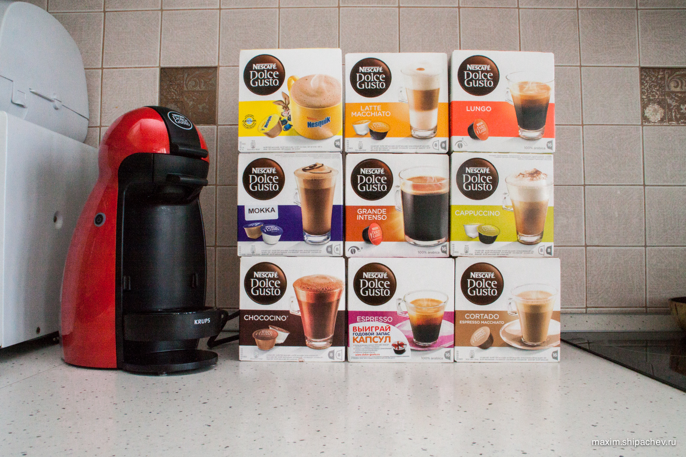
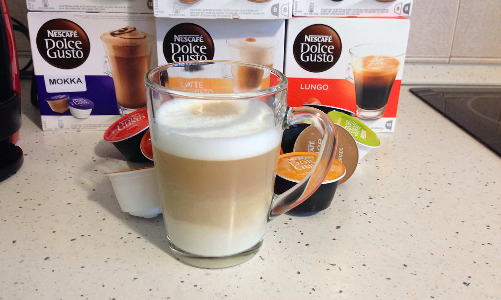

Говорят, что кофе помогает делать больше глупых вещей с большей энергий. Как раз то, что мне нужно.
О домашней кофеварке я ненавязчиво мечтал довольно давно. Правда, в моей жизни были капельная кофеварка, рожковая и турка тоже валяется где-то. Но в капельной лучше выходит заваривать чай, рожковая оказалась неинтересной по соотношению возня-качество, а в турках я вообще ничего не понимаю. Хотелось чего-то универсально качественного. Тыщ за 35-40. К счастью, обладать 35-40 тысячами хотелось больше, поэтому последние годы я просто ходил и облизывался на кофеварки как мусанги на кофейные зёрна.
Естественно, на пути заядлового шопоголика, вроде меня, встречались уже кофеварки капсульного типа, вроде Jacobs Tassimo или Nescafe Dolce Gusto. Но продукт который они выдавали, я считал чем-то средним между МакКофе-3-в-1 и Nescafe Classic. Шли годы, снобизм не позволял мне трезво оценивать продукт, и я мечтал о Настоящей Кофемашине.
Около месяца назад я в очередной раз наткнулся на начальную модель Nescafe Dolce Gusto в Metro C&C. Она продавалась за 1990 рублей, что на 33001 рубль было меньше, чем примерно стоила кофеварка мечты. Я начал зондировать вопрос. К удивлению, плохих отзывов о капсульных кофеварках в интернете не было. Да, на выходе получается не напиток богов, да, стоить будет подороже, чем в турке. Но достоинств набиралось больше. Я решил, что пора, и купил кофеварку и 9 коробок капсул до кучи.

Опишу собственные впечатления. Jacobs Tassimo, в отличие от Nescafe Dolce Gusto, умеет делать чай. Но чай, кажется, проще, всё-таки заварить в чайнике. Ну и, во-вторых, мне попалась именно Dolce Gusto. Ещё одно отличие моей, самой дешёвой, кофемашины от более дорогих — отсутствие автоматизации. Вам придётся на глаз дозировать количество горячей воды. Если потратить на кофемашину тыщи 4, то будет возможно настраивать количество воды. Но переключить рычажок нам не очень сложно, поэтому остановились на самой дешёвой.
Принцип работ Nescafe Dolce Gusto следующий:
- вы выбираете капсулу с вашим любимым напитком, в случае, если это не просто кофе или какао, а что-то хитрее, вам понадобиться две капсулы, одна, к примеру, с кофе, другая, с молоком.
- вставляете капсулу в кофемашину, зажимаете её рычагом, в этот момент крышку капсулы протыкает игла,
- наливаете в кофемашину воду, включаете. Проходит секунд 20 до того как красная лампочка станет зелёной — можно начинать
- переключаете рычаг подачи воды. В этот момент через иглу начинает подаваться сначала пар, а потом и вода. Внутри капсулы есть мембрана, которая не позволяет воде сразу же течь сквозь кофе. Вначале вода набирается в пространство между этой мембраной и крышкой капсулы, вода через мембрану давит на кофе, спрессовывая его. Когда необходимое давление достигается, мембрана рвётся, раздаётся чуть слышный хлопок, и горячая вода под давлением проходит сквозь спрессованный кофе.
- в случае напитка, состоящего из двух капсул, нужно будет вынуть первую капсулу и вставить вторую.
- приятного кофепития.
Кофемашина Nescafe Dolce Gusto умеет готовить, на сегодняшний день, 24 вида кофе и напитков. В Кемерове продаётся видов 15. Мы пробовали 12.
- Просто кофе. Внутри, как ни странно, кофе. Всего «просто кофе» — видов 10, точно.
- Напиток Несквик. Тут людям, предпочитающим только огурцы с грядки, уже сложнее — в составе присутствуют ароматизаторы, лактоза, кокосовое масло, соль, экстракт дрожжей, витамины, корица и соевый лецитин. Справедливости ради стоит сказать, что схожий состав и у традиционного несквика.
- Шоколадоподобный напиток Chococino — 1 капсула (жареный кофе) + 1 капсула (сахар, какао-порошок, соевый лецитин, ванилин, корица)
- Похожий на какао напиток Mocha, на него наклеивают смешные наклейки на русском языке Мокка, чтобы не путали с другой жидкостью. 1 капсула (жареный кофе) + 1 капсула (сухое молоко, соевый лецитин, сахар)
- Latte Macchiato — 1 капсула (жареный кофе, сухое молоко) + 1 капсула (сахар, соевый лецитин)
- Cappuccino — 1 капсула (жареный кофе) + 1 капсула (сухое молоко, сахар, соевый лецитин)
- В Cortado — одна капсула, позволяющая сделать кофе с молоком. Правда внутри не жареный кофе, а растворимый.

Стоимость набора из 16 капсул в Кемерове — от 219 рублей в «Ленте» до 295 рублей в «Метро». Таким образом одна чашка вам обойдётся в 14-19 рублей. В случае напитков состоящих из двух капсул, стоимость нужно увеличить вдвое.
После использования капсулу можно сразу выбросить, но я бы рекомендовал отложить в тарелку, чтобы дать стечь воде. Её в капсуле остаётся приличное количество, если таких капсул в мусорном ведре у вас будет штук 10, мусору придётся мокро.
Моё резюме — надо брать. Правда после праздников кофемашин нет ни в «Ленте», ни в «Метро», но, уверен, рынок удовлетворит эти наши потребности совсем скоро.
За две недели я потратил на капсулы около 2500 рублей, что, конечно, раз в 25 превышает обычный для нашей семьи кофейный бюджет, но в доме царит радость, гармония и неповторимый аромат. Давайте выпьем кофе за это.